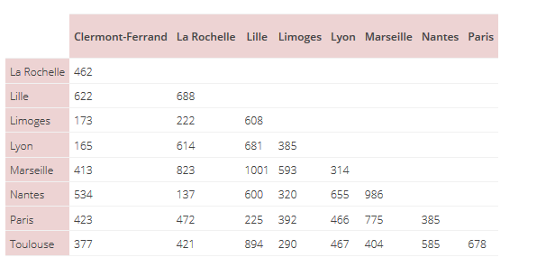
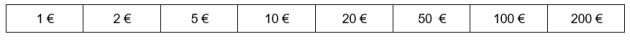
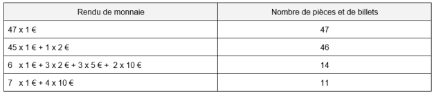
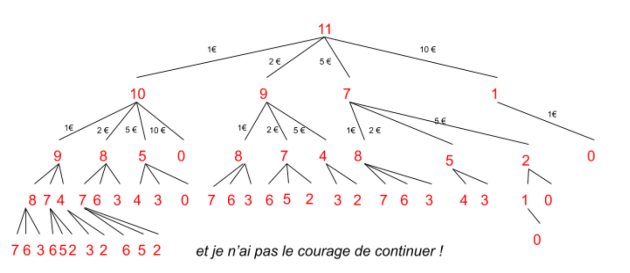
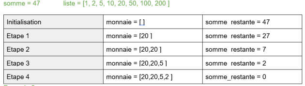
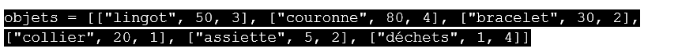

Les Algorithmes gloutons⚓︎
Présentation⚓︎
En programmation, on cherche à optimiser le problème, c'est-à-dire à trouver la meilleure solution. On cherche à diminuer le temps de calcul, l'utilisation de la mémoire, et surtout l'efficacité. On souhaite que la solution soit trouvée à chaque fois (ou au moins le plus souvent possible).
Pour résoudre un problème d'optimisation nous auront besoin :
- d'un problème aux multiples solutions
- d'une fonction permettant d'évaluer la résolution
- l’existence d'une solution optimale ou assez bonne
Un petit exemple
Un voyageur souhaite visiter plusieurs villes de France, dans n'importe quel ordre, mais en minimisant la distance parcourue.
Départ et arrivée à Clermont-Ferrand.
Villes à visiter : Limoges, Lyon, Paris et Toulouse.
Le tableau suivant donne les distances routières kilométriques entre plusieurs villes de France :

1. Déterminer tous les trajets possibles et en déduire le trajet optimal.
On ne comptera pas deux fois les mêmes trajets effectués dans deux sens différents
Pour débloquer la solution entrer le code correspondant au nombre de trajets trouvés :
2. Calculer le nombre de trajets possibles si le voyageur décide de visiter toutes les villes du tableau.
On donnera que la façon de calculer le nombre de coombinaisons possibles avec n chiffres est nx(n-1)x(n-2)x...x1 = n! (factorrrielle n)
compter le nombre de villes
Problème de rendu de monnaie⚓︎
Le but est de programmer une caisse automatique pour qu'elle rende la monnaie de façon optimale, c'est-à- dire avec le nombre minimal de pièces et de billets. Nous disposons de toutes ces pièces et nous en avons autant que l'on veut !

Vous souhaitez acheter un objet d'une valeur de 53 € et vous payez avec un billet de 100 €.
La caisse doit vous rendre : 100 - 53 = 47 € mais de quelle façon !
En effet, Il existe un grand nombre de possibilités pour vous rendre la monnaie :

Nous pourrions ainsi lister l'ensemble de ces possibilités de façon “méthodique” en utilisant un arbre mais cet algorithme serait très “coûteux” en temps de calcul.
Imaginons un exemple en partant simplement de la valeur 11 €

Nous allons donc utiliser un algorithme “glouton” pour optimiser ce problème.
Définition : A chaque étape, on effectue le choix qui semble le meilleur, sans jamais remettre en question les choix déjà effectués.
Pour le rendu de monnaie, c'est assez simple, il suffit de prendre à chaque étape la plus grande valeur de billet ou de pièce. Dans notre système monétaire, cet algorithme est pratiquement toujours la solution la plus optimisée mais nous allons verrons plus loin que ce n'est pas toujours le cas.
Voici l'algorithme proposé, il sera à implémenter plus tard.
La fonction renduMonnaie() prendra en argument la somme à rendre et la liste des pièces et billets à disposition. Cette fonction retournera la liste des pièces et billets à rendre
1 2 3 4 5 6 7 8 9 | |
Exemple 1 : on dispose de toutes les pièces

Exemple 2 :
L'algorithme est-il toujours optimisé si vous ne disposez plus de toutes les pièces ...
A vous de résoudre cette situation à la main dans un premier temps.
somme = 63
liste = [1, 2, 20, 50, 100, 200]...
Vous avez bien lu, il ne reste plus de pièces de 5 € , ni de billets de 10 €!!
Pour débloquer la solution, trouver au moins le nombre de pièces rendues :
Implémentation⚓︎
A faire
Programmer le rendu de monnaie et vérifier le résultat pour les exemples 1 et 2.
Situation Canonique
La situation du rendu de monnaie, ici, est canonique c'est à dire qu'elle arrive toujours à une solution optimale. Ceci est lié à notre système de monnaie.
Avec un autre système monétaire, on pourrait se retrouver avec des résultats qui ne seraient pas satisfaisants : la somme rendue peut être supérieure ou inférieure à la somme dûe.
L'ancien système monétaire britannique était composé de pièces de (1,3,6,12,24,30).
Modifier le système de monnaie et vérifier que le programme n'est plus optimal.
Exercices⚓︎
Un TP est disponible si le temps le permet.
Problème du sac à dos⚓︎
Vous êtes chasseur de trésors ! Après de longues heures d'aventure, des dangers évités de justesse, et malgré une armée de pilleurs à vos trousses, vous avez trouvé un énorme TRÉSOR !
Vous êtes heureux, vous sautez de joie et lancez des pièces en l'air !
Finalement vous retrouvez votre calme et commencez à réfléchir vite (n'oubliez pas l'armée de pillards qui est sur vos traces...).
Votre sac à dos est assez solide pour n'emporter que 10 kg et le trésor pèse bien plus... Il va vous falloir choisir les objets à emporter. Heureusement vous êtes prévoyant et vous avez la liste des objets présents dans le coffre ainsi que leur masse et leur valeur (Comment ça “ce n'est pas très crédible” ? Vous êtes vraiment chasseur de trésor vous ?). Le trésor ne contient qu'un exemplaire de chaque objet.
En bon “geek” que vous êtes, vous avez toujours votre IDE Python favorite sur vous. Il va falloir créer un algorithme de remplissage de votre sac à dos et fissa si vous ne voulez pas finir ruiné voire pire...
Il s'agit de choisir les objets à emporter dans le sac afin d'obtenir la valeur totale la plus grande tout en respectant la contrainte du poids maximal. C'est un problème d'optimisation avec contrainte.
Ce problème peut se résoudre par force brute, c'est-à-dire en testant tous les cas possibles. Mais ce type de résolution présente un problème de complexité. Son coût en fonction du nombre d'objets disponibles croît de manière exponentielle.
Vous envisagerez plutôt une stratégie gloutonne (méthode heuristique dans la vidéo suivante).
Le principe d'un algorithme glouton est de faire le meilleur choix pour le premier objet, puis le meilleur choix pour le deuxième, et ainsi de suite sans jamais remettre en cause le choix précédent !
Que faut-il entendre par “meilleur choix” ?
- Est-ce prendre l'objet qui a la plus grande valeur ?
- Est-ce prendre l'objet qui a la plus petite masse ?
- Est-ce prendre l'objet le rapport valeur/poids le plus grand ?
- Le choix le plus “spontané” serait de prendre les objets qui ont les valeurs les plus élevées ?
- Est ce vraiment le bon ?
Bien sur, si vous êtes joueur, vous pouvez essayer de tout tester mais nous vous conseillons vivement de regarder cette vidéo avant de vous lancer dans la programmation :
A vous de l'implémenter⚓︎
Vous disposez de plusieurs programme “squelette” qui contient l'ossature de vos différentes fonctions. Elles sont documentées (docstring) et testées (assert).
Vous disposez également d'une liste des objets présents pour tester vos différentes fonctions :

La fonction (valeur) permet de trier la liste des objets en fonction de leur valeur.
Cette fonction est déjà complétée
Sac_v1.py
1 2 3 4 5 6 7 8 9 10 11 12 13 14 15 16 17 18 19 20 21 22 23 24 25 26 27 28 29 30 31 32 33 34 35 36 37 38 | |
Une version plus subtile vous permettra de tester différentes méthodes heuristiques pour optimiser votre choix. (soit par valeur, soit par masse ou rapport valeur/masse)
La dernière fonction sacGlouton est la partie du programme qui sélectionne les trésors à emporter.
Sac_v2.py
1 2 3 4 5 6 7 8 9 10 11 12 13 14 15 16 17 18 19 20 21 22 23 24 25 26 27 28 29 30 31 32 33 34 35 36 37 38 39 40 41 42 43 44 45 46 47 48 49 50 51 52 53 54 55 56 57 58 59 60 61 62 63 64 65 66 67 | |
A vous de les compléter pour emporter les meilleurs pièces du trésor avant l'arrivée de vos ennemis !
Vous présenterez vos résultats sous la forme d'une phrase en français indiquant la valeur dans le sac à dos, sa masse et la liste des objets !